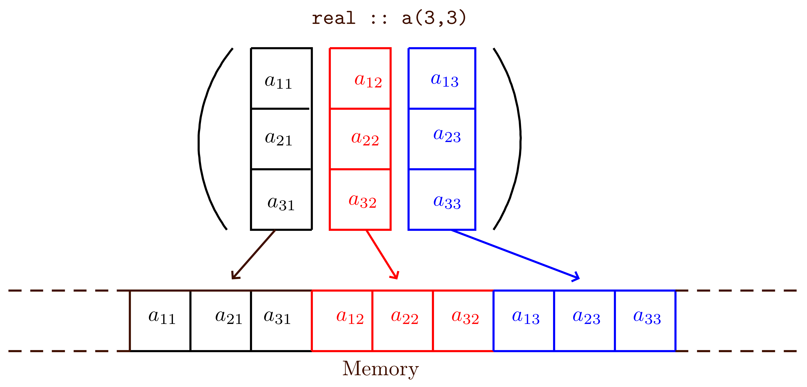
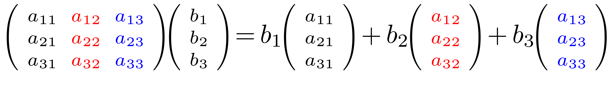
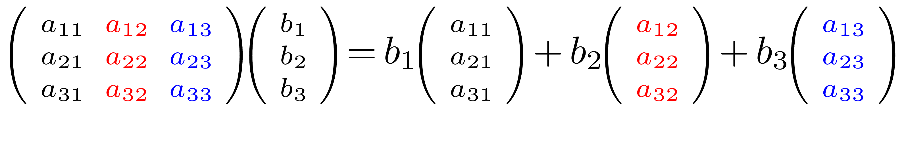

block to define blocks, where local variables can
be declared. For examples, the following code defines two nested blocks
in which local variables  and
and res2
are defined.
|
As a computational physicist using Fortran for decades, I summarize what I know about Fortran and what features are frequently used in practical programming. |
Higher level programming languages (than Fortran) allow higher abstraction and provide more facilities that allow programmers to try and explore more algorithms. But there are still research areas where the algorithms are conventional and what is needed is just efficient float-point operation on objects of simple data structure (number crunching). Those areas are where Fortran prevails.
Fortran is a language tailored to the specific task of numerical computation. Most programming languages will have a flavor of Fortran if they are used in writing numerical programs. Fundamental support for multi-dimensional arrays in Fortran makes it convenient to write efficient numerical programs, where arrays are often the sole nontrivial data structure needed. Practical reasons why a computational physicist should learn Fortran include (1) Fortran is dominant in large scale parallel computing and Fortran programs are using most of the resources of the largest supercomputers in the world. (2) Fortran is still the most widely used programming language in the computational physics community so that one can not totally avoid reading or revising Fortran codes if one wants to efficiently collaborate/communicate with people in this community.
For debug purpose, I primarily use open source compiler
gfortran. The compiler options mentioned below will be for
gfortran by default. The following are some useful
gfortran compiler options that can help find bugs as early
as possible:
-fimplicit-none -std=f2008 -fcheck=all -Wall -Wextra
-fbounds-check
-static Allocate all local variables statically, not
dynamically on the stack.
Fortran is case-insensitive (this is different from most popular languages). Use either newline or semicolon to complete a statement (this is different from C which neglects newline). For example:
int i real j
is equivalent to
int i; real j
Use exclamation mark (!) for one line comment, which tells
the compiler to discard everything from where the mark is found up to
the end of the same line. Fortran does not have a keyword for defining
block comment (multi-line comment) similar to C (/* */).
The following keywords are defined in FORTRAN 77:
call, close, continue, dimension, do, else, else if, end, endif, external, intrinsic, format, function, goto, if, implicit, open, parameter, print, program, read, return, stop, subroutine, save, then, write
The following keywords are also defined in FORTRAN 77 but I never or seldom use:
assign, backspace, block data, data, common, endfile, entry, equivalence, inquire, pause, rewind, rewrite
The following keywords were added in Fortran 90:
allocatable, allocate, deallocate, contains, use, module, only, intent, optional, result, namelist, cycle, exit, while, where, select, case, include, interface, nullify, operator, elsewhere, pointer, private, procedure, public, recursive, sequence, target
The following keywords were added in Fortran 95:
elemental, forall, pure
The following features were added in Fortran 2003:
abstract, associate, asynchronous, bind, class, deferred, enum, enumerator, extends, final, flush, generic, import, non_overridable, nopass, pass, protected, value, volatile, wait.
The following keywords were added in Fortran 2008:
block, codimension, do concurrent, contiguous, critical, error stop, submodule, sync all, sync images, sync memory, lock, unlock.
The recommended way of organizing Fortran code is as follows. Use only
two top units: program and module. And place
function/subroutine in modules.
One advantage of puting procedures in modules is that Fortran standards
require that compilers generate explicit interfaces to procedures
defined in modules, and this interface is available to a calling unit
that use the module. This makes it possible for compilers to check
argument match at compiling time. This helps to find all bugs related to
argument mismatch before actually running the code.
Note that these interfaces are called explicit to contrast with implicit interfaces which is what procedures which are not defined inside modules have. You can, of course, write explicit interfaces for such procedures, but it's almost always easier and safer to let the compiler do it for you.
A function/subroutine can have a single level
of nested subroutines and functions using contians. A
procedure CONTAINed within a program unit also has an explicit
interfaces available to the host unit.
program a_name use your_modules implicit none real :: x x = 1.0 !assignment, this is a comment call some_subroutine end program a_name
Define subroutines:
subroutine p(arg1, arg2, more_arguments) some codes here end subroutine p
Use keyword call to invoke a subroutine:
call p(arg1, arg2, more_arguments)
Define functions:
function myfunc(arg1, arg2, more_arguments) result (myval) some codes here end function myfunc
Functions can be used in all expressions, e.g.,
a = myfunc(1,2)*1.0
Fortran pass arguments by reference (not by values). A subroutine or function knows the memory location of the actual arguments passed to them via the argument list. Generally no copying in and copying out of an array, but sometimes, copying in and copying out may be involved (e.g. for the case where the actual argument array is not continuous in memory).
A module contains specifications and definitions that can be accessed from other program units. These definitions include data object definitions, namelist groups, derived-type definitions, procedure definitions, and procedure interface blocks. For example:
module mod_name
use some_module
implicit none
real:: x
contains !the following must be subroutine/function
subroutine p(arg1,…)
some_codes_here
end subroutine p
end module mod_name
As mentioned above, placing
function/subroutine in modules
(by using keyword contains) can make the full interfaces of
the procedures available to a calling unit and thus makes it possible
for compilers to check argument match at compiling time. This helps to
find all bugs related to argument mismatch before actually running the
code.
All variables in a modules are assumed by most fortran compilers to have
save attribute, but this is not required by the fortran
standard. An alternative way to gurantee that all variables in a module
retain their values throughout the runtime is to use that
module in the main program, so that the module never goes out of scope
and thus the values of the variables are retained throughout the
runtime.
if constructif (logical_expression1) then some_codes elseif (logical_expression2) then some_codes else some_codes endif
where elseif and else clauses can be absent. A
single branch if construct can be simplified as
if (logical expr) one_statement
Table 1 summarizes the relation operators and logical operators used in forming logical expressions:
|
||||||||||||||||||||||||||||||
select case structure:
CHARACTER(len=1) cmdchar
. . .
Files: SELECT CASE (cmdchar)
CASE ('0')
WRITE (*, *) "Must retrieve one to nine files"
CASE ('1':'9')
CALL RetrieveNumFiles (cmdchar)
CASE ('A', 'a')
CALL AddEntry
CASE ('D', 'd')
CALL DeleteEntry
CASE ('H', 'h')
CALL Help
CASE DEFAULT
WRITE (*, *) "Command not recognized; please re-enter"
END SELECT Files
Fortran Do loop:
do i = nstart, nfinal, stride print *, 'i=', i enddo
If you change the value of the loop index i inside the
above loop structure, e.g. i=i+1, the compiler will
complain:
Error: Variable 'i' at (1) cannot be redefined inside loop beginning at (2)
The above loop is similar to the for loop in C. For
comparison, consider the following for loop of C:
for(j=0;j<10;j=j+1){
printf("hello,%d\n",j);
j=j+1; }
where we also modify the value of loop index variable j
inside the loop and this is allowed by C compilers. This comparison
indicates that C is flexible and, as a side effect, more prone to
possible bugs.
Do concurrent loop:
do concurrent (i=1:10) a(i)=sin(i*pi/4.) enddo
which explicitly specify that the inside of the loop has no interdependencies; this informs the compiler that it may use parallelization/SIMD to speed up execution of the loop and conveys programmer intention more clearly.
Another loop structure using while:
do while(i<10) write(*,*) 'i=',i i=i+1 enddo
The above while loop can also be implemented by using
if and goto:
10 if (i<10) then write(*,*) 'i=',i i=i+1 goto 10 endif
The while loop can also be implemented by using
do and exit:
do write(*,*) 'i=',i i=i+1 if(i>=10) exit enddo
Here, after the exit statement has been executed, control
is passed to the first statement after the loop. In passing, we note
that there is a cycle statement that transfer control back
to the beginning of the loop to allow the next iteration of the loop to
begin.
Fortran is a statically typed language, which means that the type of
values that a variable can take is fixed at compile time and does not
change during runtime. Fortran does not have the type inference
capability available in some languages such as haskell, which means that
we need to manually declare the type of all variables used in a program.
The implicit rule that enables us to omit type declaration
is “syntactic sugar” that we should avoid using in practice
because it is bug-prone. To totally avoid the problematic
“implicit rules” of fortran, using either implicit
none or the compiler option -fimplicit-none, or
using both for safety.
Fortran has five basic data types, namely integer, , complex,
logical and character.
|
||||||||||||
Each data type has some attributes that can be further specified. For example, how many bytes (1byte=8bits) are used in storing an real number can be specified by using the kind value:
real(kind=4) :: xs ! 4 byte float real(kind=8) :: xd ! 8 byte float real(kind=16) :: xq ! 16 byte float
However the meaning of the value of the kind parameter
depends on the compiler. For example, some compilers may use the
following scheme:
real(kin=1) :: xs ! 4 byte float real(kind=2) :: xd ! 8 byte float real(kind=3) :: xq ! 16 byte float
To avoid using the magic value of kind, one can use the intrinsic inquiry function kind(). I often use
integer,parameter:: dp=kind(1.0d0) !return the kind value of a literal constant real(kind=dp) :: xd !use this value as the kind value
to define a double-precision variable since 1.0d0 denote a literal constant of double-precision. After defining the kind value, the syntax to denote a literal constant of this kind is, e.g., 12_dp.
Besides kind(), there are other intrinsic inquery functions that can return a kind value that can be used in defining variables: selected_int_kind(), selected_real_kind(). For example
integer, parameter :: p=selected_real_kind(8) !for sorage size of 8 bytes (64bits) real(kind=p) :: x write(*,*) precision(x), range(x), digits(x), epsilon(x) !output: 15 307 53 2.2204460492503131E-016
If all varaibles in our code use the same kind value, a more convenient
way is NOT to specify it in source code. Instead, use compiler options
to specify the precision we want. For example, we write in the code:
real :: abc and then compile the code by using the
compiling option -fdefault-real-8 (for
gfortran) to specify a 8-byte float number. For
ifort, the corresponding option is -r8.
The length of a character variable is an attribute, which
can be specified by using
character (len = 40) :: name
Without specifying the value of len parameter, the length
of a character variable is default to one.
Array is a data structure consisting of elements of the same type. Memory address of each element can thus be computed by a simple mathematical formula using array index. Arrays are often the sole non-trivial data structure used in a numerical code.
Declare an array:
real, dimension(0:2, 1:4, -1:3) :: A real :: B(0:2, 1:4, 2:6) !omitting the dimension keyword
which defines a real-type array A with
dimensionality being ;
the lower bound and upper bound of the
1st dimension are 0 and 2, respectively; the
extent along each dimension is equal to
upper_bound-lower_bound+1, and for this case, is 3, 4, and
5, respectively. The dimensionality of an array is often called as
“rank” in Fortran (analogy to the rank of a
tensor, not be confused with the rank of a matrix in linear algebra,
which corresponds to the maximal number of linearly independent columns
of a matrix).
The combination of the rank and corresponding extents, is called the shape of an array. In the above case the shape of the array is . Two arrays are conforming with each other if they have the same shape.
We need specify bounds in each dimension in order to completely specify a multidimensional array. If we do not specify the lower bound of the array, lower bound of array in Fortran is by default . The following declaration:
real :: B(1:3, 1:4, 1:6)
can be simplified as
real :: B(3, 4, 6)
In summary, the following terminologies are worth remembering:
Rank is the number of indexes needed to adress an element
Extent is the number of elements along a direction
Shape is the combination of rank and extents.
Bound is the upper or lower index along a direction
Size is the total number of elements in an array, or along a dimension of an array
These information can be quried by using inquiry functions:
real :: A(0:2, 1:4, 2:6) print *, rank(A) print *, shape(A) print *, lbound(A) print *, ubound(A) print *, size(A) print *, size(A,1), size(A,2), size(A,3)
Note that the return values of shape(), lbound(), and ubound() are arrays, even if the arrays being quried is one-dimensional. This can be verified by examine the rank of the return values.
Use index to access single element of an array:
B(1,2,1) = 1.0
Use the index range (start:end:sride) to access multiple elements of an array (array-slice):
print *, B(1:2, 1:5:2, 3)
When referring to an array slice, both lower bound and upper bound can be omitted and they defaul to the declared array bounds . For example:
print *, B(:, :, 3)
Arrays can be initialized by using an array constructor:
integer :: r(4) r = [1,2,3,4]
Implicit do loops can be used inside an array constructor:
integer :: i integer :: r(4) r=[(i**2, i=1,4)]
Since memory is laid out in one-dimension (each location has a single address index, not a set of indices), a compiler must decide how to map multi-dimensional arrays to memory locations. Different language use different conventions. In Fortran, elements of an array are stored in such a way: when traversing memory continuously, the first index of an array is the fastest changing, the second index is the second fastest changing, and so on. For a 2D array, this layout is often refered as stored “by column” (i.e., column elements are in contiguous memory) since conventionally a 2D array is visually displayed as a matrix whose first index changing corresponds to a “column”).
The “by column” store layout is illustrated in Fig. 1.
|  |
Why do we care the memory layout of an array? There are many cases where knowing the memory layout is important. For example, in MPI, we need to know the memory layout in order to correctly merge arrays gathered from multiple processors.
Firstly, knowing the layout enables us to calculate the memory offset of
an array element. For example, for an array declared with
real(kind=8) :: a(m,n), the memory distance of an element
a(i,j) from a(1,1) is
bytes if the layout is the column-major order. The distance would be
bytes if the layout was the row-major order.
Secondly, the array layout is important to CPU cache and thus to code performance. A CPU views the memory as in 1D layout. When a CPU fetches an element from memory to operate on, it will guess that future operations may need some elements near that memory location. Therefore, a CPU will load a contiguous memory block near that location to CPU cache in order to make it comparatively quick to access elements potentially needed in future operations.
Thirdly, vectorized instructions of modern CPUs also requires consecutive access. (The vector processing can either be done with intrinsics, syntax hints of a language, or by relying on the compiler's auto-vectorizer.)
So, to get good code performance, when possible, traverse data in the order they are laid out in memory. Section B.1 provides a real life Fortran example, which clearly demonstrates the performance improvement thanks to the spatial locality in memory access patterns.
Layout of multi-dimensional arrays in memory is just a logical abstraction of the 1D linear memory. Different choices of layout can be simply considered as personal preference of the designers of a language. The personal preference of a language designer is related to the data structure and the type of operation on the data frequently used in his/her routine work. Here I try to find some specific reasons that a language prefers one layout over the another. For Fortran, I guess the reason is related to multiplication of a matrix with a vector, which can be arranged as

In this form, it is an operation over individual columns of the matrix. Then it is beneficial to store a column in contiguous memory.
For C and Python, which choose the “row-major order” layout (the rightmost index changes the fastest when scanning the 1D memory), I believe the reason is related to the perspective that a multi-dimensional array is an analogy of a nested list. Using Python list as an example:
In [3]: mylist = [[1,2,3], [4,5,6]]
To refer to an elment, we use mylist[i][j], which is the
 element of the outer list
mylist[i]. Then it is natural to store elements of the
innermost list in contiguous memory (list elements are not necessary in
continuous memory, here we assume that a 1D list is a 1D array). That is
the right most index changes the fastest when scanning the 1D memeory.
Compile-time arrays are arrays whose shape and bounds are known at compile time, i.e., fully-declared-at-compile-time arrays. Without modifying and re-compiling the source code, we can not change the shape and bounds, hence compile-time arrays are also called “static arrays”.
If a static array is declared in a subroutine/function, its
values are not not guarantted to be retained between calls to the
subroutine/function. To retain the value, we can specify
save attribute when declaring the array.
Static arrays are often allocated on stack. However the size of stack is limited. Large arrays have to be allocated in heap in order to avoid the stack overflow. This can be achieved by using the allocatable arrays discussed below.
A run-time array is an array whose bounds are not fully known at compiling time (the rank of a array is known at compile time). The bounds of run-time arrays are determined at run-times by computed (or input) values. Fortran 90 has three varieties of run-time arrays, namely:
allocatable arrays
automatic arrays
array pointers
Currently, I restrain myself from using pointers because they may prevent possible optimization by the compiler.
The run-time arrays are sometimes called dynamic arrays. But the term “dynamic” is overloaded and have many meanings. For example, “dynamic arrays” may mean growable arrays that allows elements to be added or removed.
Note that a dummy array in a subroutine just refer to an actual array passed in; they are not considered as dynamics arrays. (Dummy arrays will be discussed in Sec. 8.6.)
Allocatable arrays are arrays whose bounds along each dimension are
unknown at compile time (the rank is known), with their
creation/deletion and their bounds being controlled by programmers at
runtime. Use keyword allocatable to declare a allocatable
array. In this case, only the rank needs to be specified. For example:
real, allocatable :: A(:,:)
Note that no lower or upper bounds can be specified when declaring an allocatable array. This is different from the (dummy) assumed-shape arrays discussed later, where the low bound can be specified (default to 1 if not specified).
To allocate a dynamic array:
allocate(A(-1:3,4))
[Besides using allocate statement, there is another way in
which an allocatable array will get (re-)allocated: assigning an array
or array slice to an allocatable array name (rather than its slice). For
example:
real, allocatable :: A(:,:) real :: B(3,4), C(5,6) A = B !A will get allocated, with the same shape and bounds as B write(*,*) size(A,1), size(A,2), lbound(A,1) A=C !A is de-allocated and then re-allocated to the same shape and bounds as C write(*,*) size(A,1), size(A,2), lbound(A,1)
This is informally called “(re-)allocation on assignment”, which makes dynamic arrays looks more like a variables in a dynamically typed language. However, there is overhead here because lots of checks/actions need to be done at runtime (e.g., is the allocatable array already allocated?, if allocated, is the shape and bounds are the same as the right-hand side array? if they differ, the allocated array will be de-allocated and then re-allocated to the same shape and bounds of the right-hand side). Therefore, I usually try to avoid using this kind of automatic (re-)allocation on assignment. One can always suppress the (re-)allocation is by using an array section (rather than an array name) in an assignment:
A(:,:) = B
In this case, if the allocatable array A is not allocated
or already allocated but its shape does not match B,
runtime error will appear.]
To de-allocate a dynamic array:
deallocate(A)
The creation and deletion of dynamic arrays are under full control of a
programmer, with one exception that a dynamic array without
save attribute will be automatically deleted if the
declaration of the dynamic array goes out of scope. The automatic
deletion of dynamic array can be prevented by specifying
save attribute when declaring the array. For most fortran
compilers, dynamic arrays declared in a module are assumed
to have save attribute by default.
Once an allocatable array has been allocated, its size cannot be altered, except by deallocating the array and then allocating it again.
The automatic arrays can be considered as a special kind of alllocatable arrays that are implicitly (de-)allocated by run-time libraries, rather than explicitly by programmers. The automatic arrays are allowed only in subroutine/function, they can not appear in main program or modules.
In terms of syntax, the difference between allocatable arrays and automatic arrays is: when declaring an allocatable array, allocatable keyword needs to be included and array bounds are specified with : (i.e., not specified), whereas the low and/or upper bounds are specified with variables when declaring an automatic array and no allocatable keword should be included.
An automatic array is a local array
(not a dummy argument) of a subroutine/function/block and
its definition involves variables whose values are unknown at compile
time. Automatic arrays can not be delcared directly in
program or module units.
This kind of arrays are called automatic arrays because their allocation
and de-allocation are automatically handled without explicit
instructions from programmers. Specifically, an automatic array will be
allocated automatically on entry to the subroutine/function, and will be
de-allocated automatically when it goes out of scope. Therefore we can
not use save attribute to an automatic array. If we did, we
will get compiling errors such as follows:
Error: Automatic object cannot have the SAVE attribute
If we really want to have a persitent arary, we should use
allocatable arrays or static arrays,
for which a save attribute is allowed. Note that an
allocatable array (not a dummy argument) defined in a
subroutine/function without the save attribute
will be automatically deallocated upon subroutine/function
return, which is the same as an automatic array. (As a general rule, if
an array/scalar is local to the routine, memory is allocated on entry
to the routine and deallocated on return to the caller.)
Automatic arrays are usually allocated on the stack whereas allocatable arrays are allocated on the heap (but this behavior is not specified in the Fortran standard, and can depend on specific implementations). Does this difference results in any difference in performance? (needs to be examined)
The specification of an automatic array is allowed to contain function
calls, which can be either built-in or user-defined functions, with the
only requirement that the functions must be pure, i.e., no
side effects. One often used function in this case is the built-in
inquiry function size, which is used to query the size of
other arrays. For example:
real :: myarray(size(a,1), size(a,2))
Local non-constant variables in a subroutine are not allowed to appear in the specification expression of automatic arrays. The reason is that an automatic arry needes to be allocated at the begining of the procedure, but a local variable does not have a defined value just on entry to the routine. Even if we initialize the value of the local variable when declaring it, this value is available only when the first executable statment in the procedure is executed because initialization is an assignment (an executable statement), which is not a pure function.
The specification expression of automatic arrys is allowed to use dummy arguments of the procedure, and variables from modules (including its host module if the subroutine is contained in a module). (It is user's responsibility to make sure the module variables have gotten correct values before they are used in the specification expression of automatic arrys.)
These rules are also applicable to the dummy argument arrays discussed in Sec. 8.6.
Automatic arrays can be seen as a restricted kind of allocatable arrays, which are allocated automatically on entry to the subroutine/function, and are de-allocated automatically when they go out of scope. For an allocatable arrays defined in a subroutine, a programmer can allocate/deallocate it at arbitrary locations, rather than only on the entry and return location. The limitation of automatic arrays can also be seen in the following senario: If the values of variables needed in defining arrays are only available later in the subroutine, then an automatic arrays can not be defined in this case.
If a dummy argument of a procedure is declared as an array, then usually no array is actually allocated on entry to the procedure: it just refers to the actual argument arrays passed in from the calling unit. So dummy argument arrays are not new type of arrays, but the syntax of declaring them may be different from that of declaring actual arrays. And the syntax is used to infer what information of the actual argument array is passed in from the calling units. The follwoing are various syntaxes of declaring a dummy array:
real :: a(m,n) !explicit shape array, adjustable array real :: b(m,*) !assumed size array, not recomended now. real :: c(:,:) !assumed shape array real :: d(..) !assumed-rank array real, allocatable :: d(:,:) !allocatable dummy array
For the assumed shape/rank array and allocatable (dummy argument) array, an explicit interface must be available to the calling unit. (The way to get the explicit interface is to place the procedures in a module and use this module at the calling site.)
Let us discuss these four types in turn.
In the first two cases, i.e., explicit shape array and
assumed size array, usually just a simple C pointer to the
first element of the actual argument array is passed in. Since only a C
pointer is available with no stride being available, the compiler has to
assume that the stride is 1, i.e., the array is contiguous in memory. If
we pass an array slice that is not contiguous in memory to a dummy
argument declared as an explicit shape array/assumed size
array, a temporary array will be created and the data of the
array slice is copied in (and copied out when the subroutine returns) in
order to guarantee that the resulting array is contiguous in memory so
that the subroutine is doing right to the actual argument array. For
this case, gfortran will give the following warning:
Fortran runtime warning: An array temporary was created for argument 'a' of procedure 'p'
If the dummy array is declared as an explicit shape array, rank mismatch between actual array and dummy array is allowed. However, this kind of use is often not the intent of programmers, i.e., a bug. Most time we prefer that the actual and dummy array have the same shape.
In the above example, the variables m,n appearing in the
specification expression of the explicit shape array can be dummy
argument variables or module variables, but can not be a local variable
(because a local varialbe is not initialized at this point and thus its
value is not available).
The following is an example of explicit array:
subroutine p(u,m) use some_module, only : n real :: u(m,n) !explicit shape array end
A common bug when using explicit array is that the rank/extent/bound declared in a procedure are different from those of the actual argument array. As mentioned above, this mismatch is allowed by the compiler. If the mismatch is not intended by the programmer (i.e., the programmer made a mistake in the declaration), then the code may not work correctly.
An assumed-size array is an array that is a dummy argument and has an asterisk as the upper bound of the last dimension:
subroutine p( A, B, C ) Integer :: A(*), B(5, *) !lower-bound of the last dimension default to 1 Integer :: C(0:1, 2:*) !explicitly specify the lower-bound of the last dimension end
The extent of the last dimension does not need to be specified because it is not needed (by the compiler) in calculating the memory address offset of an array element with respect to the first element. The assumed-size array is introduced to Fortran in order to reduce the burden of the user of a subroutine by not requiring the user to provide the extent of the last dimension of an actual argument array.
I prefer to use explicit-shape arrays over assumed-sized array since it is not a big deal to just omit a single bound. Omitting the last upper bound also makes bounds checking difficult since the last upper bound is not defined in the subroutine.
If we leave all the upper bounds unspecified in a dummy array defintion,
then we say this array is an assumed shape array. The upper
bounds will be automatically inferred during runtime from the length in
each dimension of the actual array passed in.
The following are examples of assumed shape array:
subroutine p1(A, B) real :: A(0:,2:) !upper bounds will be inferred from the actual array real :: B(:,:) !lower bounds are not specified and default to 1 end
When calling a subroutine that uses assumed shape array, an
array descriptor structure of the actual array will be passed in, which
contains information on the length of each dimension and stride, as
well as the pointer to the first element of the actual argument array.
As is mentioned above, if the dummy array is declared as an explicit shape array and we pass in an array slice that is not contiguous in memory, an array temporary will be created and the data of the array slice is copied in and then copied out. On the other hand, if the dummy array is declared as an assumed shape array, no array temporary will be created. (However, this does not mean the performance will be better than the case of using explicit shape array, where an temporary array is created and data be copied in and out. This is because the latter case can improve spatial locality in memory access pattern, although involving additional allocations and copying in and out operations. Therefore, which methods will be more efficient depends on specific applications.)
If the dummy array is declared as an assumed shape array, the compiler will check agreement between the the rank of actual array and dummy array, giving error information if they mismatch. This kind of mismatch is allowed if explicit shape array is used, as is mentioned above.
Mixed explicit-shape and assumed-shape array is not allowed, i.e., the
upper bound along each dimensions must be unspecified in the defintion.
For example real:: a(1:3,1:) is illigal because the upper
bound of the first dimension is specified.
Summary: we have two choices in declaring a dummy array in a subroutine.
One choice is to declare it as an explicit shape array
(using formal argument variables, module variables, or constants to
specify the shape of the array). Another choice is to define
assumed shape array, for which we specify only the rank and
lower bound (the lower bound is 1 if not specified) of the array and we
do not specify the upper bounds along each dimension. The unspecified
upper bound will be inferred automatically from the length along each
dimension of the actual argument array during runtime.
The motivation of introducing assumed-shape arrays is to ease the burden of subroutine users, by alowing users to pass in only array names, instead of the array names plus their shape information. The burden is then imposed on the author of the subroutine: the author need figure out the shape information of the actual argument array (by using inqury functions) and use this information to define some variables to facililate the computation in the subroutine. While making the subroutine usage more user friendly (increasing the possibility of re-use of the subroutine), this often makes subroutines a little tedious, and add a little computational overhead (calling for inqury functions, assignments, etc.). Considering the practice in most numerical simulations that subroutines are written and used by the same programmer, the fortran77 style of explicit-shaped arrays may be more appealing to most programers for writing numerical codes.
Does using assumed shap array help reduce bugs for you? If yes, use it as often as possible.
Currently, I seldom use assumed-rank arrays.
If a dummy argument is declared as an allocatable array, the
corresponding actual argument must also be an allocatable array.
Otherwise gfortran will raise something like this:
Error: Actual argument for ‘a' must be ALLOCATABLE at
(1).
The actual argument allocatable array passed in can be already
allocated, or not allocated yet and it can be allocated in the
subroutine. One can use inquiry function allocated() to get
the allocation status of an allocatable array passed in. If a dumy
allocatable array of a subroutine is declared as
intent(out), then it will be automatically deallocated on
the entry to the subroutine. This makes sense since all the status of an
intent(out) unit can be destroyed.
We use the keyword pure to define a pure function
(functions with no side effects). For example:
pure function f(x) result(z) integer, intent(in):: x integer :: z z=x*2 end function f
All dummy argument variables of a pure function must be
intent(in). Pure subroutines can be defined in a similar
way, except that the dummy argument variables can have
intent(out).
Since pure procedures do not allow side effects (i.e., do not change the
state of the outer world), the compiler will raise error if we try to
modify the value of a variable of a module that is used in
this procedure:
Error: Variable 'tmp' can not appear in a variable definition context (assignment) in PURE procedure
Fortran pure functions can use module variables as (invisible) input, which can change between function invocations. Therefore fortran pure functions can not guarantee “same argument, same result”. This is different from the pure function concept in funtional programming languages, e.g. Haskell, where “same argument, same result” is guaranteed.
Local variables within the scope of a pure procedure cannot
have the save attribute, which implies that they cannot be
initialized when declared, or by a DATA statement.
No external I/O operations may occur within a PURE procedure since these change the stae of the outer world, i.e., side effects.
Any procedures that are invoked from a pure procedure must
be pure.
Elemental functions are pure functions defined with a
single scalar dummy argument and a scalar return value, but they can be
invoked with arrays as actual arguments, in which case the function will
be applied element-wise, with a conforming array return value. This kind
of function is indicated with the elemental prefix. Since
it is implied that an elemental function is also pure, the
pure prefix is not necessary.
module test_mod
contains
elemental real function square(x)
real, intent(in) :: x
square = x*x
end function
end module
Elemental subroutines may be defined in a similar way
(intent(out) or intent(inout) arguments are
allowed). The main benefit of elemental procedures is just for syntax
convenience, it does not have semantics that lend themselves to
effective parallelization.
Not all variables are accessible from all parts of our program, and not all variables exist for the same amount of time. Where a variable is accessible and how long it exists depend on how it is defined. We call the part of a program where a variable is accessible its scope, and the duration for which the variable exists its lifetime.
The scope of a variable, more accurately the scope of a naming binding (an association of a name to an entity) is the region of a computer program where the binding is valid: where the name can be used to refer to a value. Such a region is referred to as a scope block. In other parts of the program the name may refer to a different entity, or to nothing at all (i.e., unbound).
The scope of a binding is also known as the visibility of an entity. In other words, which parts of your program can see or use it. In practice, for most programming languages, “part of a program” refers to “part of the source code”, and is known as lexical scope (another kind of scope called dynamic scope will be discussed later). The lexical scope for a set of bindings in practice largely corresponds to a block, a function, or a file, depending on languages and types of entity.
Unlike C/C++, Fortran before 2008 standard does not have source code
blocks where new variables can be defined. Fortran 2008 introduces the
keyword block to define blocks, where local variables can
be declared. For examples, the following code defines two nested blocks
in which local variables and res2
are defined.
PROGRAM foo
implicit none
INTEGER :: a
a=3.0
write(*,*) 'a=',a
BLOCK
INTEGER :: res1
res1 = a + 1
write(*,*) 'res1=',res1
BLOCK
INTEGER :: res2
res2 = res1 + 1
write(*,*) 'res2=',res2,'res1=',res1
ENDBLOCK
ENDBLOCK
END PROGRAM foo
In summary, the block creates its own namespace.
I use block to add temporary diagnostic codes to existing
programs. Doing this way allow all temporary local variables to be
gathered together near the diagnostic codes and thus easy to read and
easy to remove. This is more convenient than adding and calling new
external diagnostic subroutines. In passing, adding diagnostic internal
subroutines using contains is as convenient as using
block and may be more elegant.
In C/C++, variables defined outside of all functions are global
variables. Fortran does not have such kind of global variables. To pass
information between subroutines, besides using subroutine parameter
lists, one way is to use variables in a module which can be
shared between subroutines.
save
attribute
A local variable defined in a procedure can have the save
attribute, which will make the local variable retain its value between
different procedure calls. These variables are called persistent
variables. For example:
function f() integer, save :: i=1 i = i+1 print *, i end function
However, for multiple-thread applications, this kind of local variable will be shared among different threads, which means that racing problem will appear if the procedure is called in multiple threads. Considering this situation, computer guys often say that this kind of local variables are “thread unsafe”.
A local variables with save attribute is hidden input to
the procedure in which the variable is defined.
Variables with save attribute will be alive from their
creation to the end of the program, i.e., they are not automatically
destroyed when they go out of scope. As a result, if the variables with
save attribute is a local variable defined in a subroutine,
then its value will be retained between different revocations of the
subroutine. In contrast, local variables without save
attribute will be automatically destroyed when they go out of scope. As
a result, their values can not be retained between different revocations
of the subroutine.
Lifetime refers to when a variable is allocated and deallocated during program execution. Usually we think of static allocation (variable will persist through the entire duration of the program, making it useful for storing the same information across several function calls) versus automatic allocation (variable only persists during a single call to a function, making it useful for storing information that is only used during your function and can be discarded once you are done) versus manual allocation.
In C language, variables declared outside functions are global
variables, which can be assessed from any functions. Fortran does not
have this kind of global variables, but variables in
modules are accessible to other program units if the
modules are imported to that unit. In principle, a variable defined in a
module is a local variable to that module, and will be
destroyed when the program unit that uses the module
returns. However, two situations (often appear in practice) can make the
module variables not be destroyed during the entire runtime: (1) the
module is used in the main program and thus never goes out
of scope during the runtime, (2) save attribute is used for
the variables in the module, so they retain their values.
Most fortran compilers will treat variables defined in a
module as with save attribute even if no
save attribute is specified. But for safety, we should
specify save attribute for variables in a
module if we want their values to be retained when they go
out of scope.
The above practice makes module variables look like global
variables. For this reason, we often simply say that modules define
global data.
Due to the global nature of module variables, they are
shared across threads and are therefore thread-unsafe. To make an
application thread-safe, we must declare the global data as
THREADPRIVATE or THREADLOCAL.
shared by procedures
shared by threads
nothing can be shared by processes, message passing is a must.
Where does FORTRAN store local variables?
Storage methods are not part of the language standard. Old FORTRAN compilers (FORTRAN 77 and earlier) frequently stored all variables statically. The language requires that you use "SAVE" for variables for which the values should be retained across calls to the procedure. But many programmers ignored this requirement and relied on the behavior that all variables retained their values because of the typical design of compilers in the FORTRAN 77 era.
Modern Fortran compilers typically use memory differently and local variables of procedures do not always retain their values if SAVE is omitted. This frequently causes bugs when old programs are compiled with current compilers. Compilers typically provide an option to restore the old behavior. Otherwise it could be a great deal of work to identify all variables in a large legacy program that needed to have the SAVE attribute added to their declaration.
The array syntax of Fortran is extended with additional trailing subscripts in square brackets:
real :: B(100)[*] real, dimension(100), codimension[*] :: A
A Fortran program containing coarrays is interpreted as if it were replicated a fixed number of times and all copies were executed asynchronously. Each copy has its own set of data objects and is called an image.
References without square brackets are to local data, so code that can run independently is uncluttered. Only where there are square brackets, or where there is a procedure call and the procedure contains square brackets, is communication between images involved.
The extension includes intrinsic procedures to synchronize images, to return the number of images, to return the index of the current image, and to perform collective actions.
Ref.: https://wg5-fortran.org/N1601-N1650/N1642.pdf
After Fortran 2008, the recommended way of opening file is as follows:
integer :: u open(newunit=u, file='myfile.txt') write(u, *) 'hello world' close(u)
Here newunit is an intent(out) keyword
argument of open, which returns an available unit number.
This method is better than the old method of manually specifying a unit
number.
Derived types are generalization of arrays and can contain inhomogeneous elements, which provide a more powerful organizing capability than arrays. Classes in OOP are a special kind of derived types that have procedures bound to.
Fortran's module can contain both data and procedures. But
we can not use the name of a module to define an object. On the other
hand, module can contain derived type definition and this
derived type can be used to define an object. Therefore a Fortran
module containing both derived type definitions and
procedures can be used as the counterpart of class in
object-oriented languages. However the binding between a derived type
object and its procedures must be implemented manually by programmers
before Fortran 2003. The following is a Fortran 95 example emulating
object-oriented programming style.
module class_point
implicit none
type, public :: point
real :: x, y
end type point
contains
function distance(this) result(z) !distance from origin
type(point), intent(in) :: this
real :: z
z = sqrt((this%x)**2+(this%y)**2)
end function distance
subroutine add(this,another,my_sum)
type(point), intent(in) :: this, another
type(point), intent(out):: :: my_sum
my_sum%x=this%x+another%x
my_sum%y=this%y+another%y
end subroutine add
subroutine print_point(this)
type(point), intent(in) :: this
real :: tmp
tmp = distance(this)
print *, 'Point: (x,y) = ', this%x, this%y, ' distance from orig = ', tmp
end subroutine print_point
end module class_point
program point_test
use class_point,only: point, distance,add, print_point
implicit none
type(point) :: p1,p2,p3 ! Declare variables of type point.
p1 = point(3.0,4.0) ! Use the implicit constructor
call print_point(p1) !pass the object to the procedure via a argument
p2 = point(1.0,0.5) ! Use the implicit constructor
call add(p1,p2,p3)
call print_point(p3)
end program point_test
Here % is a notation for refering to a component of derived type (most OOP languages use the dot notation). The above is not real object-oriented programming because the procedures are not parts of the object, i.e., ar not bound to the object, i.e., you can not refer to a procedure by the % notation. Fortran 2003 provides type-bound procedures: those procedures that appear in the definition of the derived type. The following is a revised version of the above program.
module my_module
implicit none
type :: point
real :: x, y
contains
procedure :: distance, printp, add, add_func
end type point
contains
function distance(this) result(z) !distance from origin
class(point), intent(in) :: this
real :: z
z = sqrt((this%x)**2+(this%y)**2)
end function distance
subroutine add(this,another,my_sum)
class(point), intent(in) :: this
type(point), intent(in) :: another
type(point), intent(out):: my_sum
my_sum%x=this%x+another%x
my_sum%y=this%y+another%y
end subroutine add
function add_func(this,another) result(my_sum)
class(point), intent(in) :: this
type(point), intent(in):: another
type(point):: my_sum
my_sum%x=this%x+another%x
my_sum%y=this%y+another%y
end function add_func
subroutine printp(this)
class(point), intent(in) :: this
real :: tmp
tmp = this%distance() ! Call the type-bound function
print *, 'Point: (x,y) = ', this%x, this%y, ' distance from orig = ', tmp
end subroutine printp
end module my_module
program test
use my_module, only: point
implicit none
type(point) :: p1,p2,p3 ! Declare a variable of type point.
p1 = point(3.0,4.0) !Use the implicit constructor
call p1%printp() !Call the type-bound subroutine
p2 = point(1.0,0.5) ! Use the implicit constructor
call p2%printp()
call p1%add(p2,p3)
call p3%printp()
print *, p1%add_func(p2)
end program test
Three things need to be noted. First, two contains appear
here, one of which binds the procedures names to the derived type and
another gives the definition of the procedures. Second, in the
definition of the procedure, the first argument must be of the same type
of the derived type and the declaration using the class
keyword, instead of the type keyword. This is a requirement
for type-bound procedures. If declared using type, gfortran
compiler would raise the following error: Non-polymorphic
passed-object dummy argument. Third, when calling the type-bound
procedure, the object is passed to the procedure in the object-oriented
way, e.g., p1%print_point rather than
print_point(p1). We still need use keyword call
when the method is a subroutine.
Ref.: Viktor K. Decyk's paper on this.
http://www.cs.rpi.edu/~szymansk/OOF90/F90_Objects.html
For ifort and mpiifort:
|
||||||||||
New syntaxes in a language seldom benefit performance. That is, “code with new syntax” doesn't imply “better compiler optimizations", and even F77 is a “high level” language. Efficient Fortran codes should stick to F77 features at their core for high performance, most of newer features would usually result in less efficient executables. F90 and newer would be mainly useful for readablity, maintainability and extensibility of the code
Do you have some strong evidence to support such statements?
Well, yes, there is evidence for this strategy. I do not claim, that all newer features have a negative impact on performance, or that you should not use them at all. Just in the very kernel, the F77 style is generally a good guide to produce efficient code. (Staying away from pointer and target attributes, do not use fine-grained derived datatypes, there was even a time when array syntax statements are slower than explicit do-loops, though compilers seem to have much improved). I am actually using F2003 features heavily, my point is just in the very kernel, there is probably little benefit.
Vectorization, if by this you mean the F90+ array syntax, is mostly a programmer convenience issue rather than allowing faster code. A competent compiler will vectorize the equivalent DO loop just as well.
There is one major reason why Fortran 77 programs might be faster: Allocated arrays (Fortran 90) are much slower than declared-at-compile-time arrays. Both are not put at the same place in memory (stack vs heap). The difference in memory management of stack and heap in Fortran can change the performance. The Fortran standard has no concept of stack and heap, so this will be implementation (i.e. compiler) dependent.
Let us see a real example in Fortran, which clearly demonstrates the performance improvement thanks to the spatial locality in memory access patterns:
program main
implicit none
integer, parameter:: m=10000, n=30000
real :: a(m,n), b(n), c1(m), c2(m)
integer :: i, j
real:: tarray(3) !record the cputime
CALL RANDOM_NUMBER(a)
CALL RANDOM_NUMBER(b)
call cpu_time(tarray(1)) !f95 intrinsic subroutine returning the cpu clock
c1=0.0
do i=1,m !switching the two loops can improve the efficiency
do j=1,n
c1(i)=c1(i)+a(i,j)*b(j)
enddo
enddo
call cpu_time(tarray(2))
write (*,*) 'CPU time used (seconds) in inefficent algorithm', tarray(2)-tarray(1)
c2=0.0
do j=1,n
c2(:)=c2(:)+a(:,j)*b(j)
enddo
call cpu_time(tarray(3))
write (*,*) 'CPU time used (seconds) in efficient algorithm', tarray(3)-tarray(2)
end program main
The above code multiplies a matrix by a vector. Two methods are implemented, one is the naive way, another is using operation over individual columns of the matrix, as discussed above. Compile and run the code:
$ gfortran c_r.f90 && ./a.out CPU time used (seconds) in inefficent algorithm 1.08469510 CPU time used (seconds) in efficient algorithm 0.208189011
There is a factor of 5 performance gain due to the spatial locality in memory access patterns. In this example, the spatial locality help both cache and vectorized instructions, since we use Fortran array slice syntax, which usually enables vector processing. In the naive method, if we switch the order of the two loops, then we obtain spatial locality in memory access patterns, but the vector processing may not be enabled because we do not provide sufficient syntax hints to the compiler. In this case, the result is as follows:
$ gfortran c_r.f90 && ./a.out CPU time used (seconds) in inefficent algorithm 0.621351004 CPU time used (seconds) in efficient algorithm 0.207148075
The performance of the naive method improves but still 3 factor slower
than the vectorized version. Let us add -O3 optimization,
which may try to vectorize any codes than can be vectorized. The result
is as follows:
$ gfortran -O3 c_r.f90 && ./a.out CPU time used (seconds) in inefficent algorithm 7.00249672E-02 CPU time used (seconds) in efficient algorithm 7.00830221E-02
Finally, we obtain the same performance.
In passing, I would like to mention another important tip that can
improve spatial locality of memory access and hence code performance:
avoid using fine-grained derived datatypes or many small arrays,
instead, try to gather them together into an array to improve locality
in memory access. To demonstrate this, let us consider a famous example
in particle simulations, where each particle has three spatial
coordinates, say . The
intuitive method would use three arrays, x(n),y(n),z(n), to
store these coordinates for each particle, where n is the
total particle number, which is usual a large number, e.g. . The jth elements of the three arrays will be
frequently used together in a computation, for example
s=x(j)**2+y(j)**2+z(j)**2. In this case, a better way of
organizing the data is to combine the three arrays into one array, e.g.,
cor(3,n), with the first index of the 1st dimension
corresponding to , second
index to , and third to . Then the above expression would
be s=cor(1,j)**2+cor(2,j)**2+cor(3,j)**2, where the three
elements are contiguous in memory and thus can help the cache and
speedup the computation.
It is a good practice to place procedures in modules (instead of internal procedures or external procedures) as it helps the compiler to detect programming errors and to optimize the code.
Subroutines should be kept reasonably short (e.g. about 50 lines (usually difficult) so that they can fill in one screen and thus are easy to read).
We now usually do not need to worry about the start up overheads involved in calling a subroutine, because some short subroutines can be “inlined” by compilers so that the inefficiency is generally not a problem.
Each module should be in a separate file.
Any code that introduces new physics to a code should have a switch to enable it to be turned off. This makes it possible to run the model in a configuration that is identical to the model before the new physics went in, in order to check that nothing unexpected has been broken.
Code should be accompanied by technical documentation describing the physical processes that the additional code is intended to model and how this is achieved. Any equations used should be documented (in their continuous form where appropriate) along with the methods used to discretise these equations.
Always bear in mind that somebody will have to maintain your code in the future. That person could be you several years later. Commenting the source lines that are not obvious from common senses. But do not make too extensive/detailed/specific comments because the details have good chance to become out-dated when codes are updated, which will make the comments inconsistent with the codes, causing confusion rather than clarification to code maintainers. It is the code itself rather than the comment that is the final and absolute definition of what is exactly done in the code (i.e., every source code is self-documenting if you understand it). Therefore rather than investing much time in writing comments, we should spend more time in making the algorithm and code easy to understand even if there is no comment. Comments should be used to state the reason for doing something, instead of repeating the Fortran logic in words.
The goal of all these practice is to reduce the chance of introducing bugs.
All routines and documentation must be written using SI units. Standard SI prefixes may be used. Where relevant, the units used must be clearly stated in both code and documentation.
Try to find some ways to test your code. Do not ignore compiler warnings, as they may point you to potential problems.
We tend to criticize other's coding style when we see a messy code. But think twice before criticizing.
At first glance of a code, your judgment of its readability is often false because it is based on the simple appearance of the code, i.e., whether the code is neat enough rather than whether its logical is clear/straightforward or not, ==>psychological reasons.
But we should realize that work and life seem to be always in a hurry.
Ref:
https://www.phy.ornl.gov/csep/pl/node1.html(this is very good)
http://annefou.github.io/Fortran/modules/modules.html
http://jules-lsm.github.io/coding_standards/guidelines/best_practices.html
Where are the stack and heap stored? They are both stored in the computer's RAM (Random Access Memory). Using RAM is faster than using virtual memory (paging file/swap file).
Stack frame access is easier than the heap frame as the stack allocation happens on contiguous blocks of memory and hence is cache friendly, but in case of heap frames which are dispersed throughout the memory so it cause more cache misses. Note that the above being continugous or dispersed in memory refers to the storage of different variables, For a single array, all the data element are gauranteed to be continous in memory regardless they are on stack or heap.
In a stack, the allocation and deallocation is automatically done, whereas, in heap, it needs to be done by the programmer manually.
a compiler may sometimes break these conventions if it wants as long as behavior is correct. For instance, due to optimization a local variable may only exist in a register or be removed entirely, even though most local variables exist in the stack. You are free to implement a compiler that doesn't even use a stack or a heap, but instead some other storage mechanisms (rarely done, since stacks and heaps are great for this).
In the context of lifetime, “static” always means the variable is allocated at program start and deallocated when program exits.
The value of a local scalar can be retained between different calls to
the subroutine/function (by using save keyword
or compiler option to save all local variables) but automatic arrays can
not have the save attribute.
The dynamic data segment is also referred to as the heap, the place dynamically allocated memory (such as from malloc() and new) comes from.
Submodules are a feature of Fortran 2008 which allow a module procedure to have its interface defined in a module while having the body of the procedure defined in a separate unit, a submodule. An example:
module points
type :: point
real :: x, y
end type point
interface
module function point_dist(a, b) result(distance)
type(point), intent(in) :: a, b
real :: distance
end function point_dist
end interface
end module points
submodule (points) points_a
contains
module procedure point_dist
distance = sqrt((a%x - b%x)**2 + (a%y - b%y)**2)
end procedure point_dist
end submodule points_a
program main
use points, only : point, point_dist
implicit none
type(point) :: a, b
a%x=0
a%y=0
b%x=1
b%y=2
write(*, *) point_dist(a, b)**2
end program main
A submodule can itself be further extended by other “descendant” submodules.
Entities in a submodule have access to the all entities and components of their ancestor module/submodules by host association, just as if they were physically present inside the source code of their ancestors.
Depending on the Fortran processor in use, splitting a module into submodules may also reduce the time it takes to compile the entire program, by avoiding so called compilation cascades. Ordinarily, changes to source code in the body of a module procedure require recompilation of the module hosting the procedure. For most build systems recompilation of a module then triggers recompilation of all program units that use that module, even if there has been no change in the things that the module “provides” to the program units that use it. When the recompiled program units are themselves modules, a cascade results.
If the body of the procedure is moved into a submodule, then any subsequent changes to the body will typically only require recompilation of the submodule and its descendants. The information in the source code of a submodule is typically not used to compile its ancestors or any program units that use its ancestor module.
Use of submodules also allows information hiding within the scope of a module. Sibling submodules of a module cannot access the entities defined local to each other.